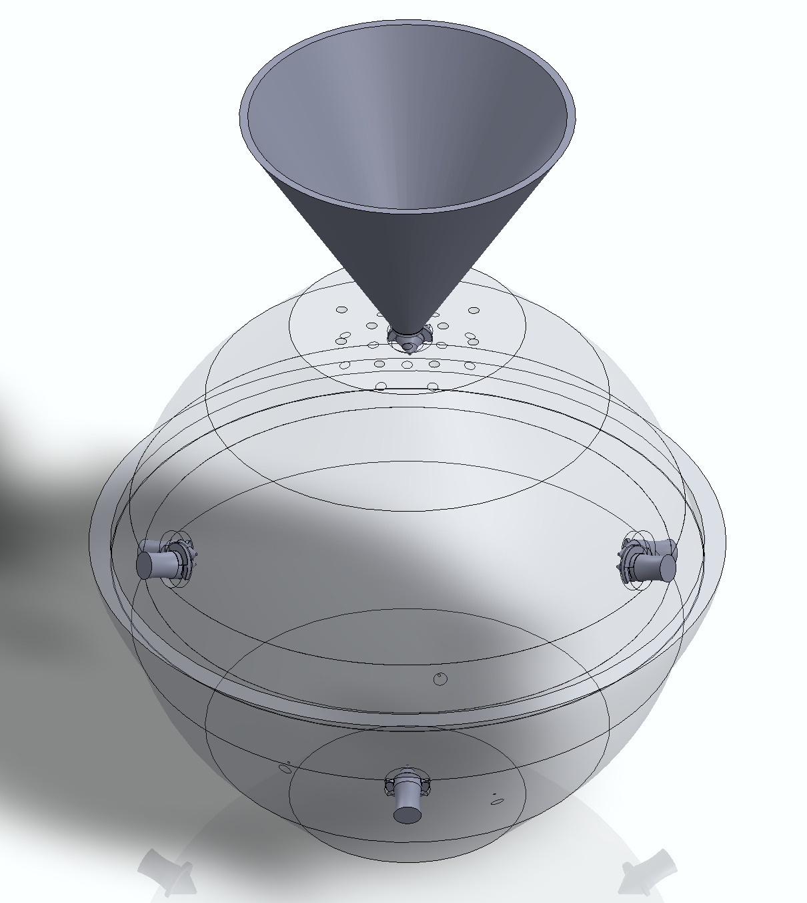
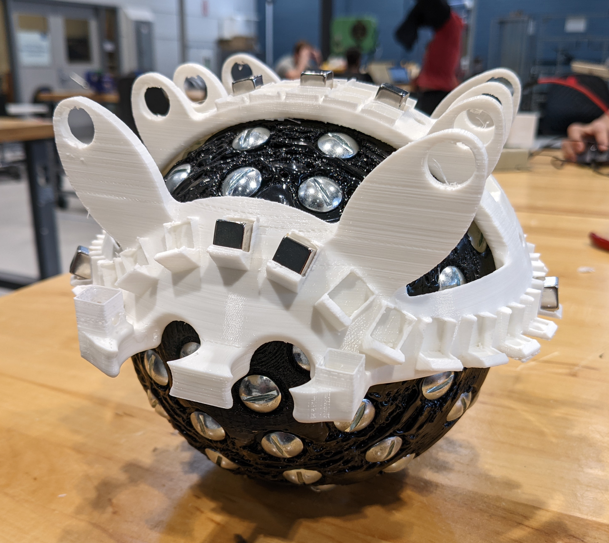

Our spherical wheel consists of two 3D-printed hemispheres printed in TPU (thermoplastic polyurethane).
The hemispheres are sized to snap together, taking advantage of the flexible material. The steel nuts and bolts further assist in securing the hemispheres together at the seam between them.
The spherical wheel is covered in a rubbery coating that must be molded to the wheel. To do this, we have designed a custom mold to apply a 0.1-inch coating to the outside of the wheel. The mold consists of two halves, six removable positioning pegs, and a filling funnel 3D-printed in PLA (polylactic acid).
The mold halves are translucent to allow us to see how full the mold is while filling it. The filling funnel is larger than the expected volume of the mold, so that as dissolved air escapes from the mold via the top vents, more molding material will take its place.
The yoke consists of a large 3D-printed frame and several consumer-off-the-shelf parts. The frame has several snap-fit enclosures in which powerful N52 magnets are placed to create a field to couple the spherical wheel to the yoke
The yoke features removable 3D-printed motor mounts. This allows for the motor mounts to be 3D-printed at a higher surface quality and strength, and it also allows us to switch the motors we're using without being limited by the mounting holes on the motor.
Our control system consists of mostly consumer-off-the-shelf parts, but the spherical wheel is directly driven by 3D-printed omni-chains.
The omni-chains consist of plastic links with plastic rollers to allow for lateral rolling from the spherical wheel. Each chain link contains its own N52 magnet to assist in coupling and driving the spherical wheel. The omni-chains are driven by a custom 3D-printed sprocket.
This sprocket is designed to fit alongside the connecting geometry between the chain links and transfer motion from the motors to the omni-chains.
For the purposes of demonstrating our beta prototype at the Innovation Expo, we have designed a test stand based on the 2020 MCBD team's work. The test stand will hold the ball drive on two rollers, with the motor controllers and power source held above.